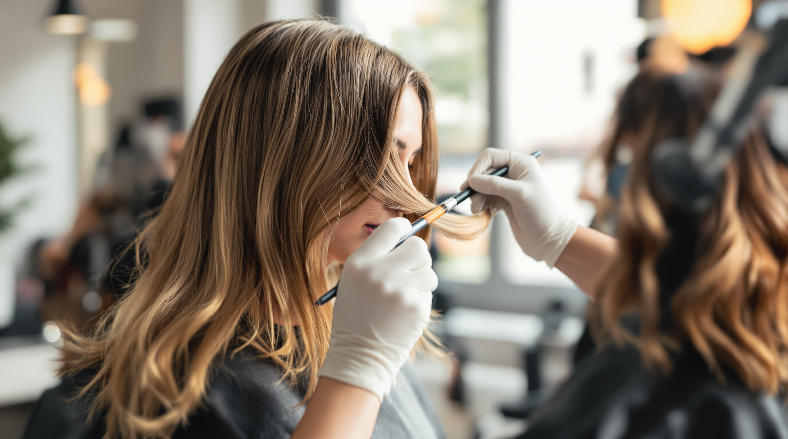
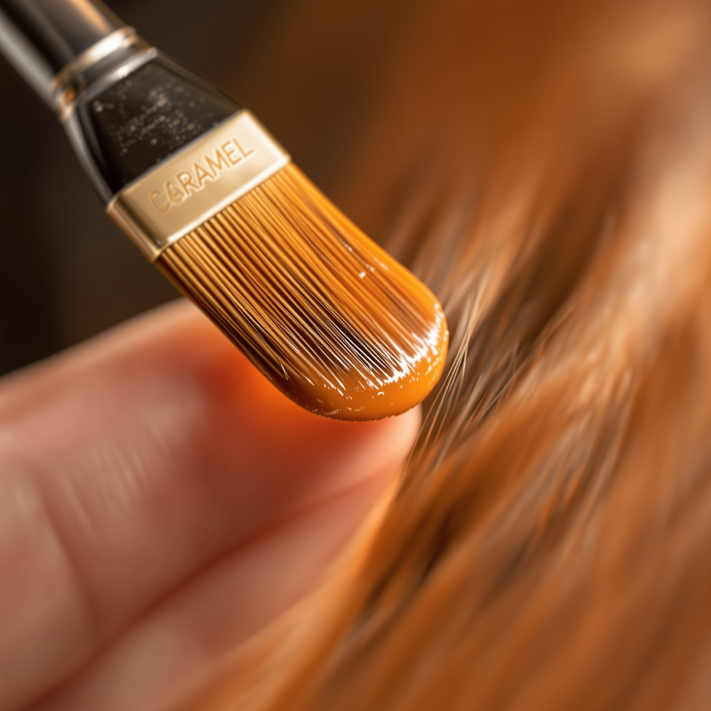
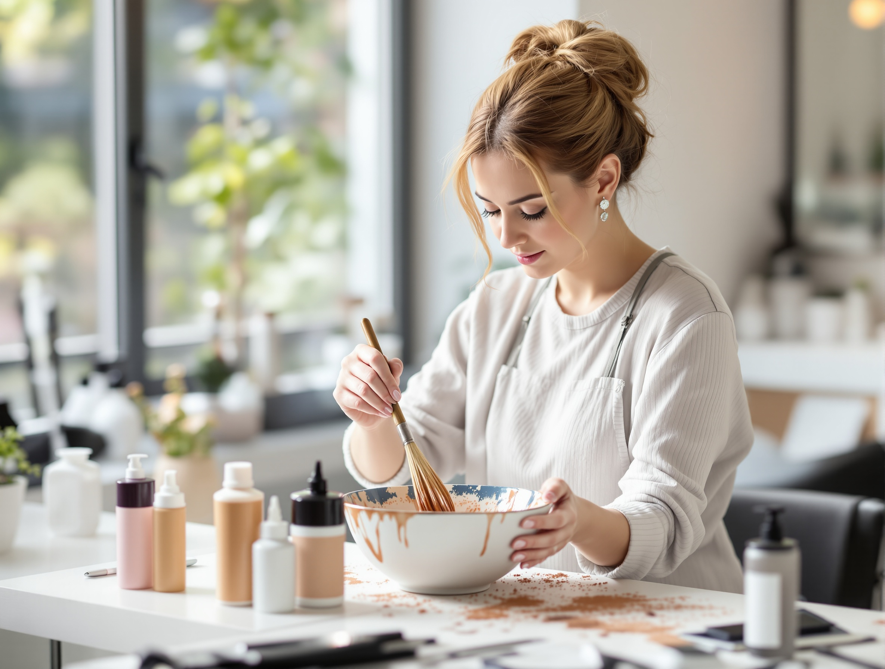
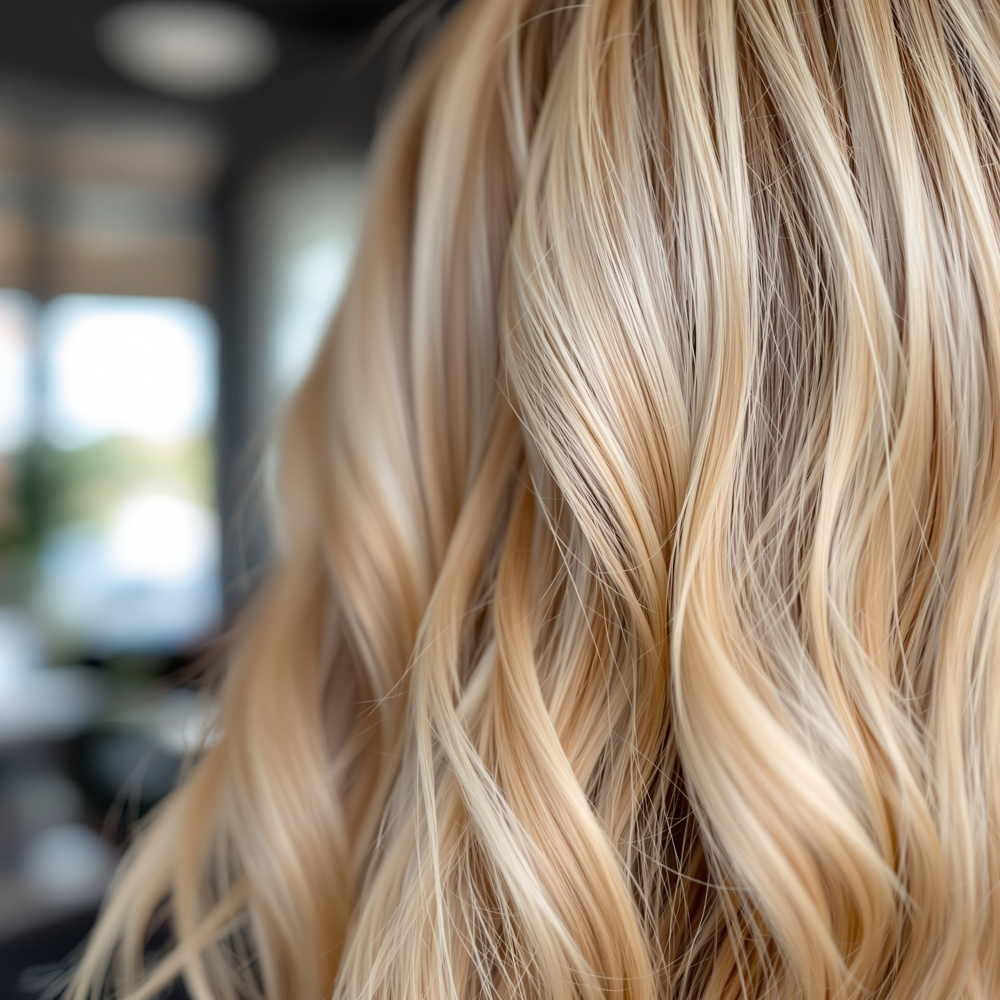
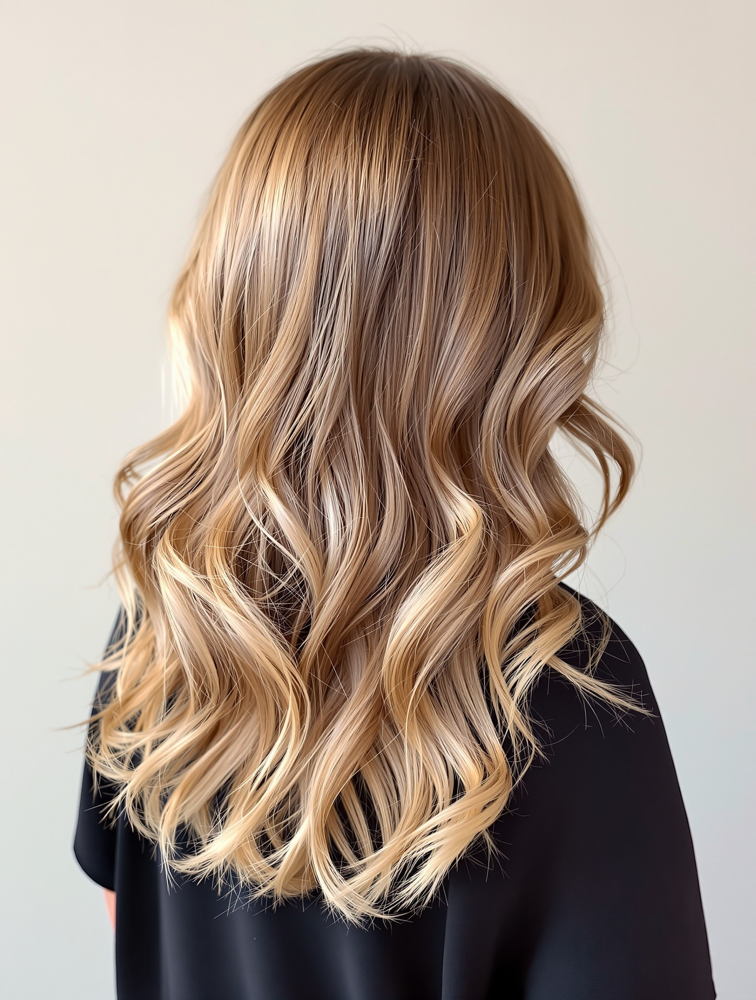
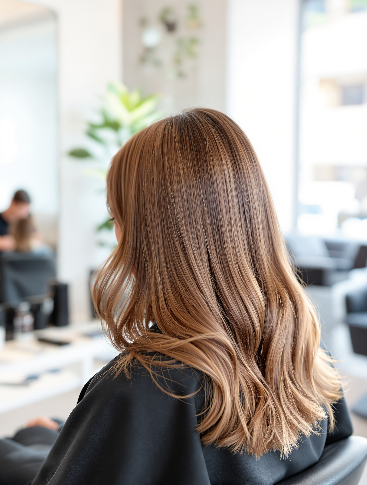
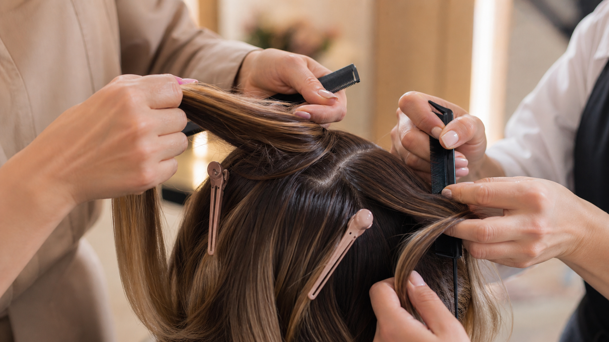
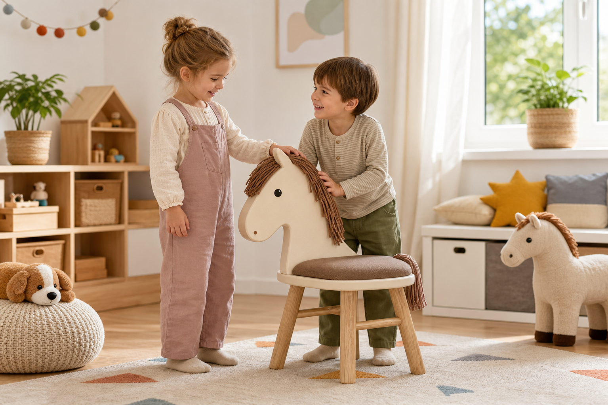
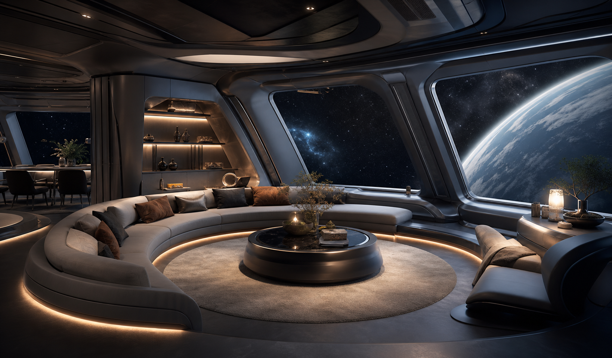

Parrucchiere · Colore · Milano
queen lab
Il colore giusto, letto sulla tua base. Anche quando è complicata.
Balayage e colore su misura, dipinti a mano ciocca per ciocca. Nel quartiere Palmanova, a Turro.
Il metodo colore


Il colore non si indovina. Si legge.
Prima di aprire un tubo guardiamo cosa c’è sotto: la base, la storia del colore, dove vuoi arrivare. È lì che si vince un balayage.
-
01
Leggiamo la base
Cosa hai già fatto, come reagiscono i tuoi capelli, quanto schiariscono davvero. Niente sorprese.
-
02
Prepariamo il colore su misura
Miscelato nel bowl, tono su tono, pensato per la tua base e non per una tabella.
-
03
Dipingiamo ciocca per ciocca
Il balayage lo pennelliamo a mano, seguendo come cadono i capelli. Naturale, tuo, anche su basi difficili.
Il lavoro
Colore e balayage, come escono dal salone.
Lavori veri, luce naturale, nessun ritocco. Il caramello che si schiarisce dalla radice, il taglio pulito, la piega che tiene.


Le mani

Il salone è nelle mani di Federico e Omar.
Chi ci sceglie li nomina per nome nelle recensioni. Capiscono cosa vuoi sul colore e sul taglio — e lo fanno alla prima ciocca.
Non promettiamo un colore che non regge. Guardiamo la tua base, ti diciamo cosa è possibile, e poi lo dipingiamo. Anche quando è complicata.
Anche i più piccoli
C’è pure il cavallo.
I bambini si siedono sulla sedia a forma di cavallo e stanno fermi per il loro taglio. Un salone solo: il tuo colore e il taglio dei piccoli, nello stesso pomeriggio.
Qui è benvenuto chiunque, davvero. Ci teniamo che ti senta a casa dal momento in cui entri.
Taglio bambini con la sedia a cavallo. Ti aspettiamo.

Listino & servizi
I servizi, con prezzi indicativi.
Così sai già cosa aspettarti prima di chiamare. Il preventivo preciso te lo diciamo in salone, dopo aver guardato lunghezza e base.
-
Balayage su misura
da 90€Dipinto a mano, ciocca per ciocca. Anche su basi difficili.
-
Colore / ritocco
da 55€Tono su tono, preparato nel bowl per la tua base.
-
Taglio & piega donna
da 35€Lettura del viso, taglio e piega che tiene.
-
Taglio uomo
da 20€Pulito e veloce, rifinito bene.
-
Taglio bambini
da 18€Sedia a forma di cavallo inclusa.
-
Consulenza colore
gratuitaPrima di decidere, ne parliamo insieme.
Prezzi indicativi, da confermare in salone: dipendono dalla lunghezza e dalla base.
Dove siamo & prenota
Via Palmanova 54, Milano.

- Orari
- Apriamo il martedì alle 9:00. Per gli altri giorni e per un appuntamento, chiamaci: fissiamo l’orario insieme.
Telefono: +39 339 8178407